More About
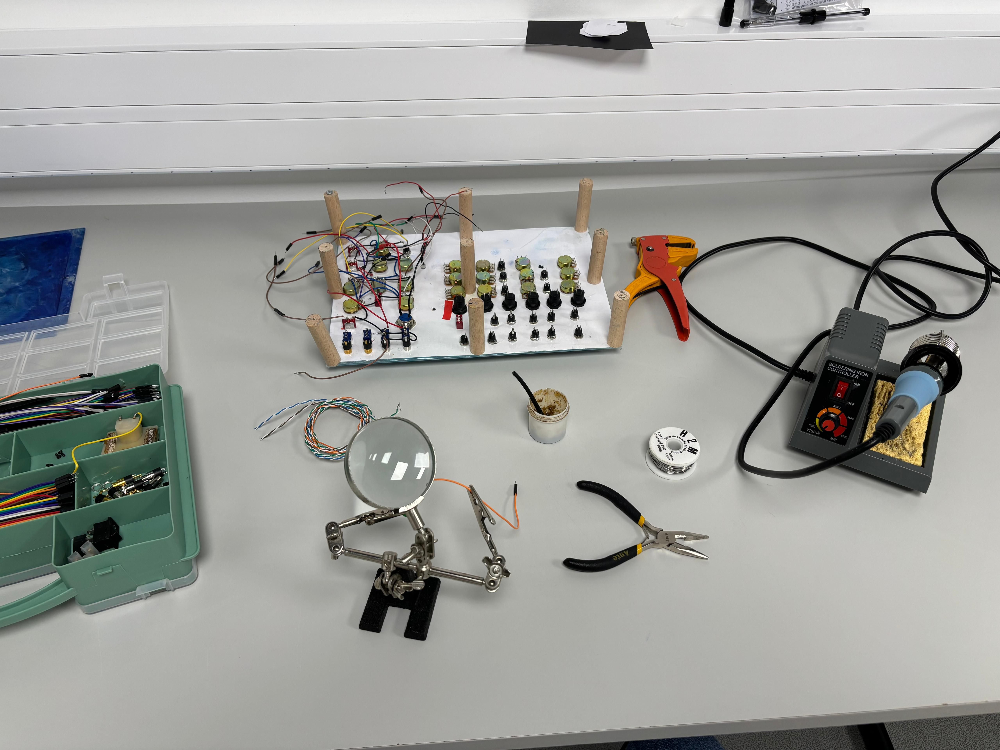
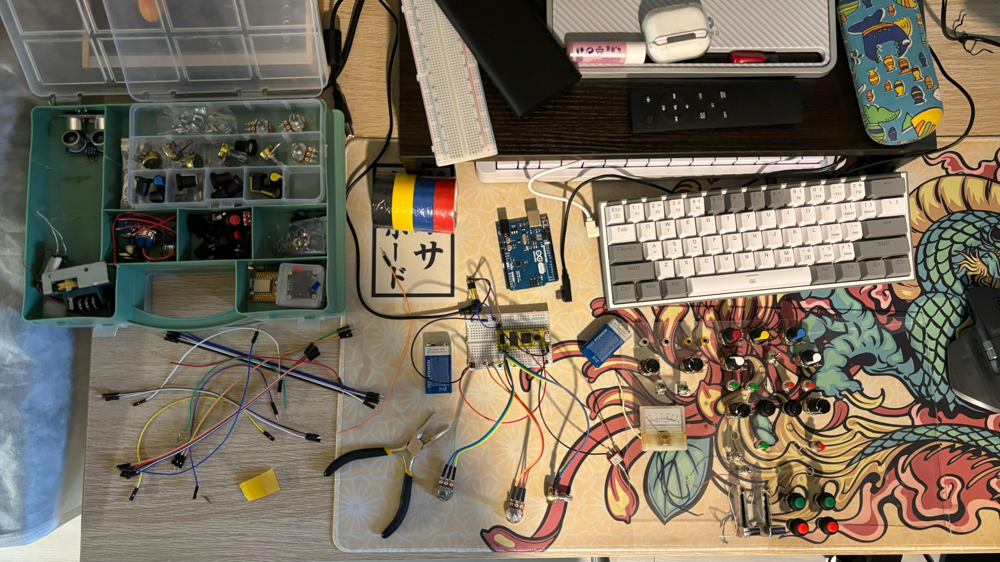
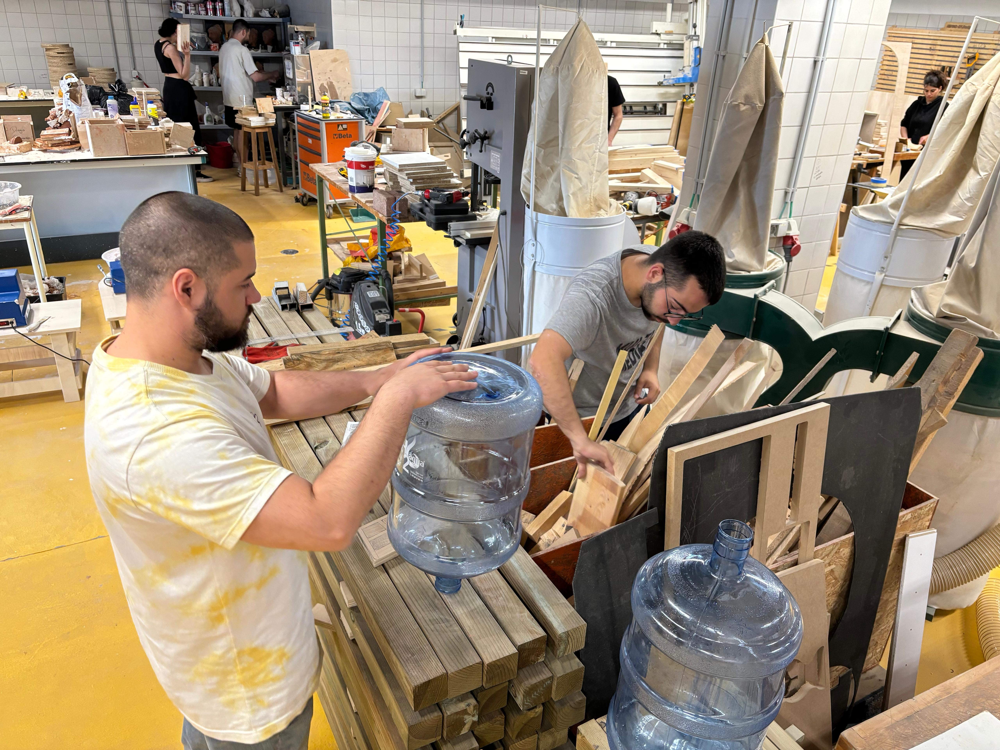

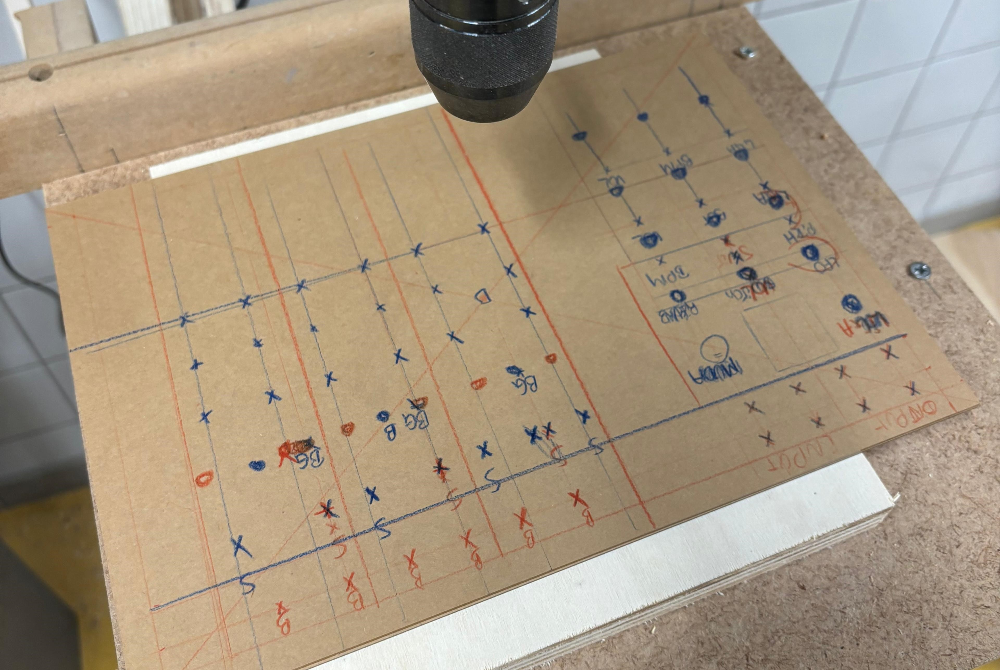
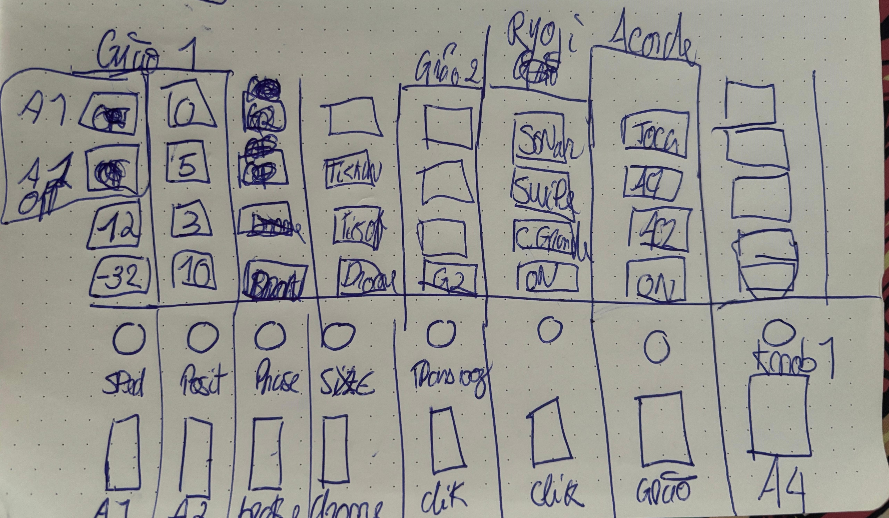
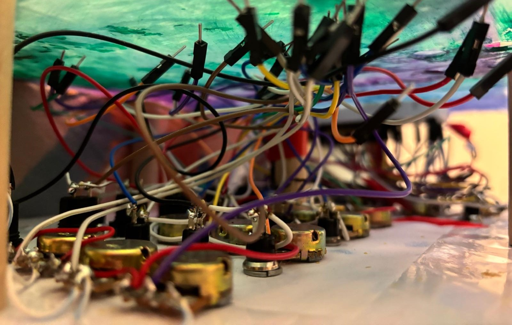
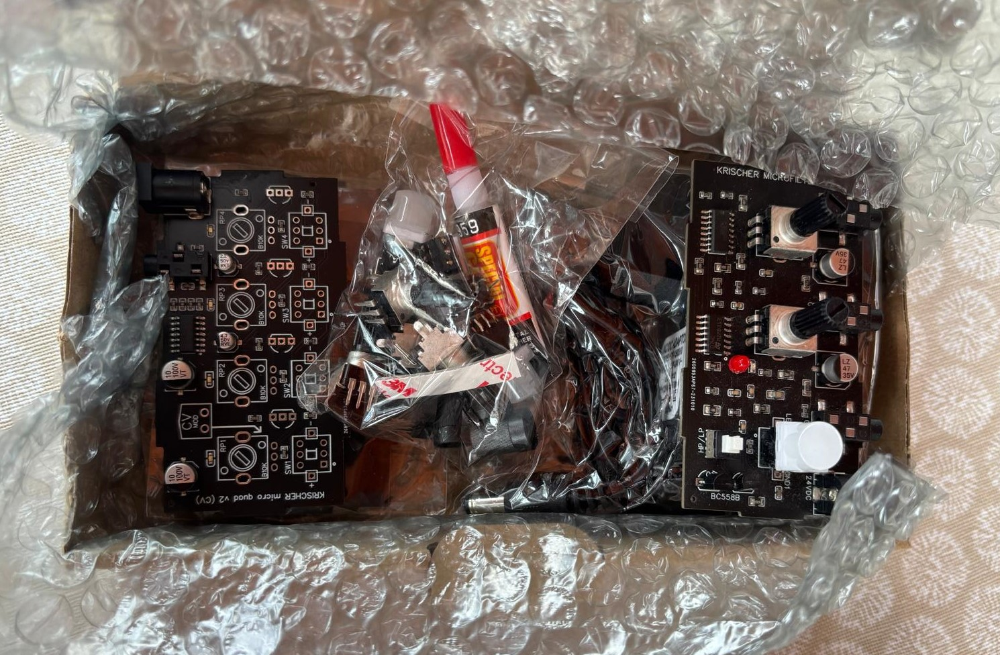
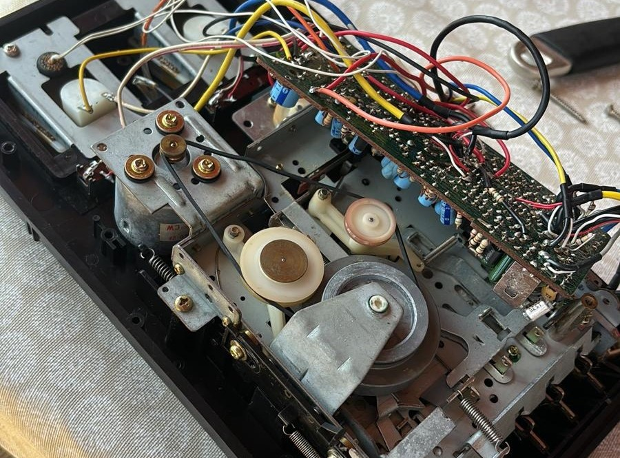
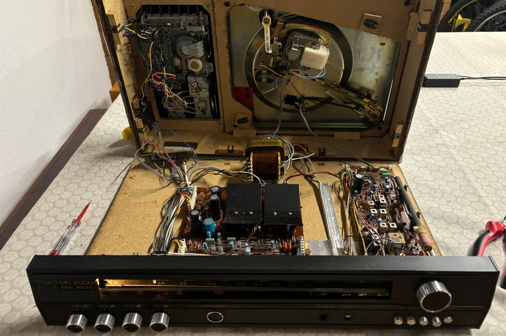
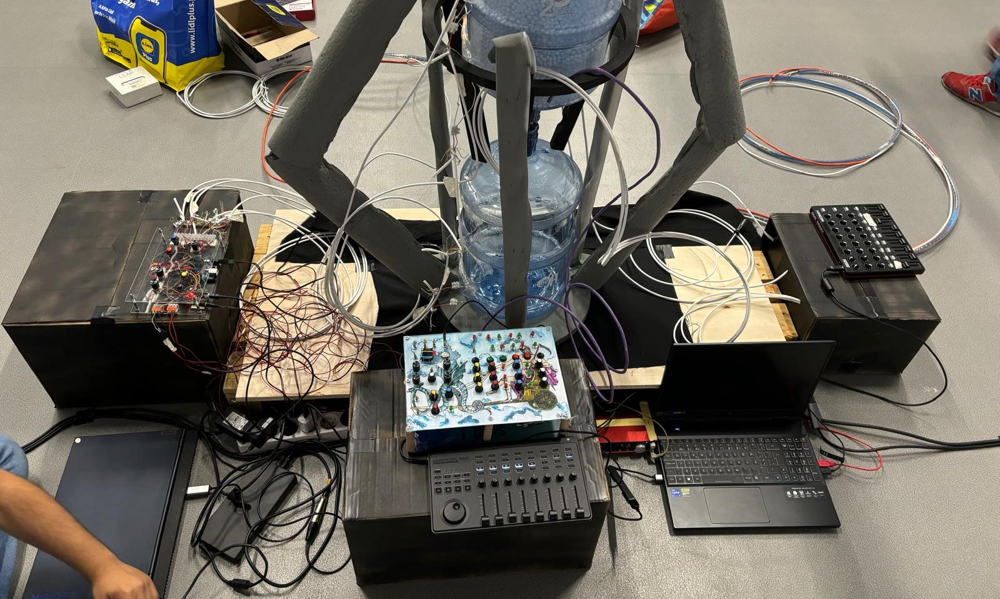
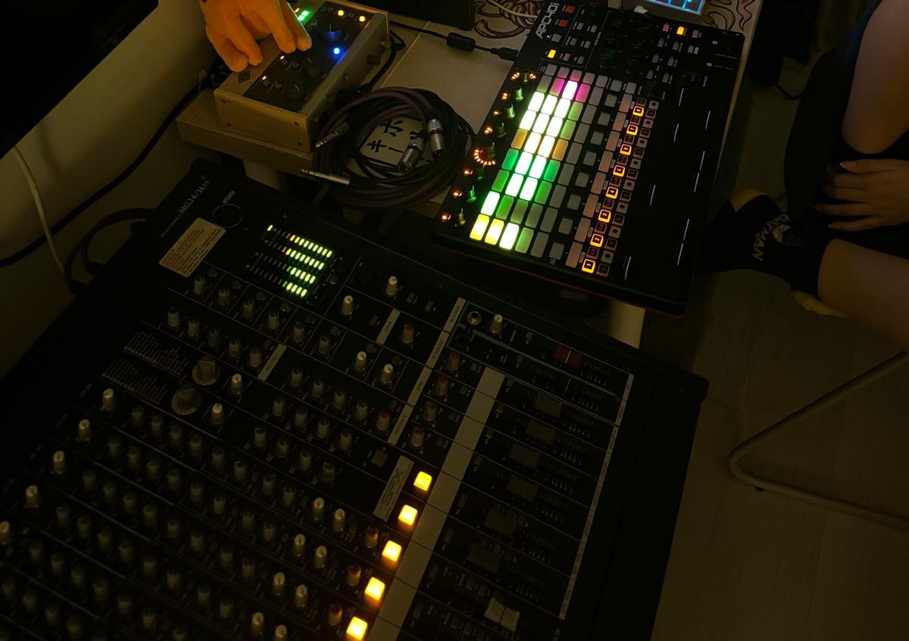
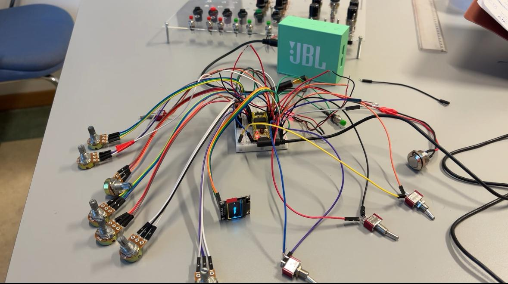
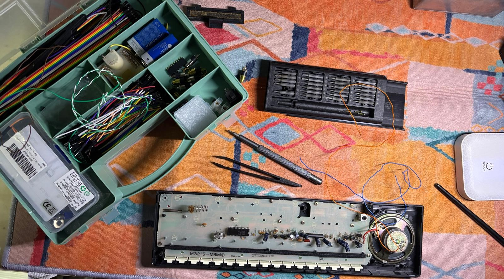
Workflow
I like making spountaneous stuff driven by exploration. I embrace the flow of ideas as they emerge. Starting with a central theme or concept, I give myself the freedom to experiment, testing various approaches and techniques along the way.
As new ideas arise, I implement them immediately, adjusting and refining my work in real-time. It’s a continuous cycle of experimentation—sometimes things click, sometimes they don’t—but that’s part of the excitement. I love discovering what combinations work and lead to unique, unexpected outcomes.Being spontaneous allows me to create more freely and effortlessly. The process as a whole, however, is quite complex, involving everything from conceptualizing and developing an idea, to constructing controllers, instruments, the environment and scene, soldering and testing components and jointing everything together.
Check out my YouTube channel videos and shorts, where I share my ideas, tests, experiments ands works.